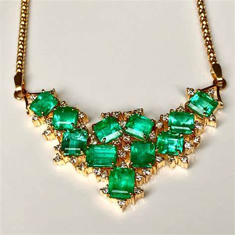
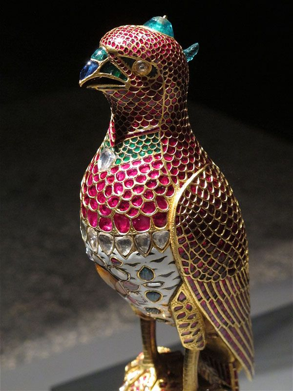
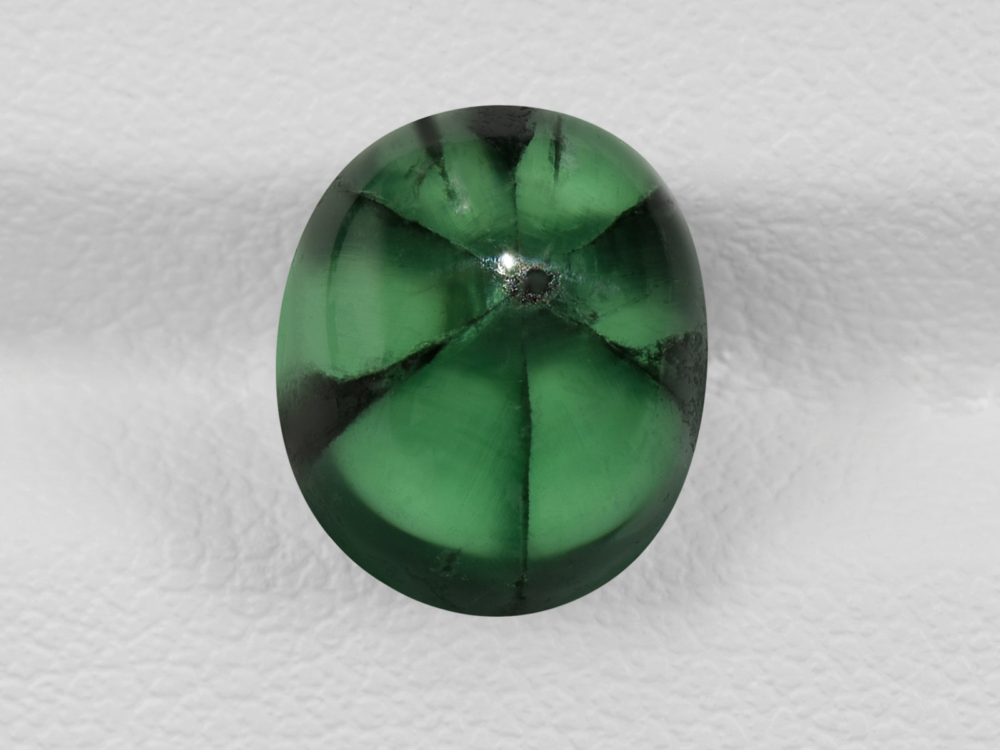
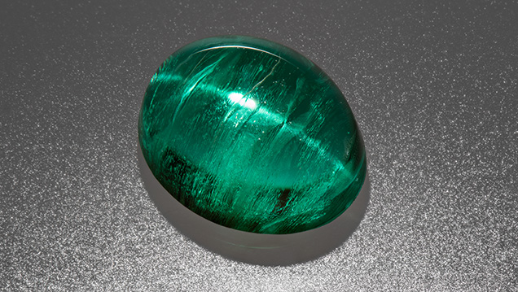
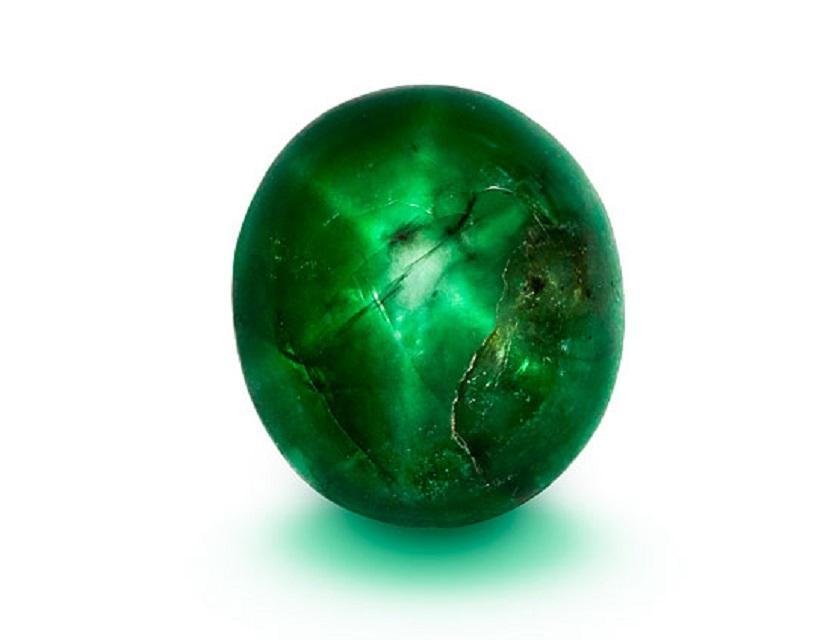
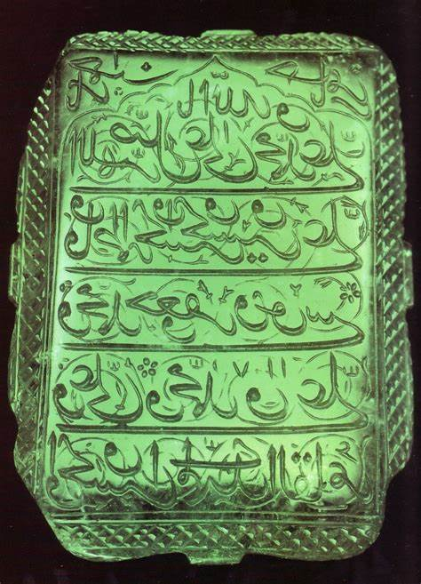
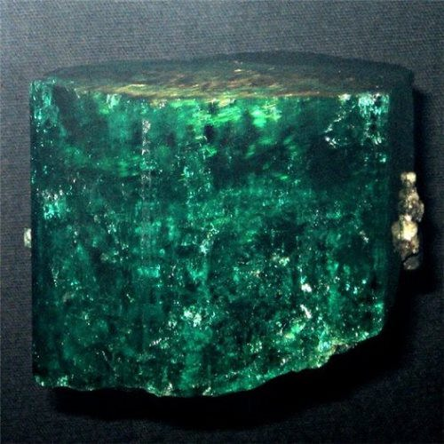
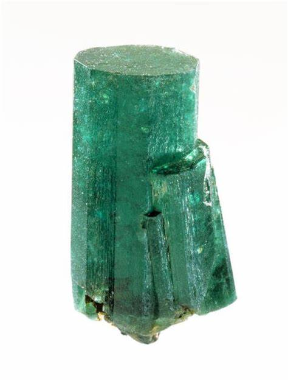
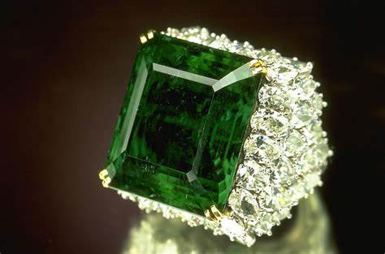

Emerald: Formation, Types, History, and Care
Chemical Formula: Be₃Al₂(SiO₃)₆ (Beryl)
Color: Green (Various Shades)
Hardness: 7.5 - 8 on the Mohs scale
Crystal System: Hexagonal
Localities: Colombia, Zambia, Brazil, Afghanistan
Common Uses: Jewelry, Collectibles, Religious Artifacts
Emerald is one of the most prized gemstones in the world, renowned for its rich, vibrant green color and its long history as a symbol of wealth, power, and beauty. A member of the beryl family, emeralds owe their distinctive color to trace amounts of chromium or vanadium. The gemstone has captivated civilizations for thousands of years, from the ancient Egyptians to the Inca Empire, and continues to be a favorite in fine jewelry today.
The word "emerald" is derived from the Greek word "smaragdos," meaning "green gem." Emeralds have long been associated with fertility, rebirth, and love. Despite their beauty, emeralds are known for their inclusions and fractures, referred to as the gemstone's "jardin" (French for garden), which are accepted as part of the stone's character.
Formation and Types of Emerald
Emeralds form in hydrothermal veins and pegmatites under specific geological conditions. Their formation involves crystallization in the presence of chromium and vanadium, which gives emeralds their green color. There are several types of emeralds based on their origin and unique characteristics:
Colombian Emeralds
Colombian emeralds are considered the finest and most valuable, known for their deep, pure green color. They are primarily mined from the Muzo, Chivor, and Coscuez mines in Colombia.
Zambian Emeralds
Zambian emeralds often display a bluish-green hue and are valued for their high clarity and vibrant color. They are sourced from the Kagem mine, the largest emerald mine in the world.
Brazilian Emeralds
Brazilian emeralds vary in color from light to dark green and are often less included than other emeralds. They are mined from various locations, including the states of Bahia, Goiás, and Minas Gerais.
Synthetic Emeralds
Lab-grown emeralds are produced using methods such as hydrothermal synthesis and flux growth. These synthetic emeralds are chemically and physically identical to natural emeralds, but they are generally more affordable and have fewer inclusions.
Structure and Properties of Emerald
Emeralds belong to the hexagonal crystal system and typically form as prismatic crystals with well-defined faces. The rich green color of emeralds is due to the presence of chromium and vanadium. Key characteristics include:
- Hardness: Emeralds have a hardness of 7.5 to 8 on the Mohs scale, making them relatively hard but more brittle due to their inclusions and natural fractures.
- Color: The green color of emeralds is caused by trace amounts of chromium and/or vanadium. The most valuable emeralds are those with a vivid, intense green color without too much yellow or blue.
- Clarity: Unlike other gemstones, inclusions in emeralds are common and often accepted as part of their character. These inclusions can create a "jardin" effect, which can enhance the stone's beauty.
- Luster: Emeralds exhibit a vitreous (glass-like) luster, contributing to their brilliance when properly cut and polished.
Uses of Emerald
Emeralds have been used for various purposes throughout history, most notably in jewelry and as a symbol of power and status:
Jewelry
Emeralds are popular in all types of jewelry, including rings, necklaces, earrings, and bracelets. Their vibrant green color makes them a favorite in engagement rings, often surrounded by diamonds or other complementary gemstones.
Historical and Religious Artifacts
Throughout history, emeralds have been used in crowns, scepters, and religious artifacts. They were believed to grant the wearer protection and insight, making them a powerful symbol in royal and religious settings.
Collectibles and Investments
High-quality emeralds are also collected as investments, with the value of the stone often increasing over time due to their rarity and desirability.
History of Emerald
The history of emeralds is rich and spans several continents and cultures:
- Ancient Egypt: The earliest known emeralds were mined in Egypt around 1500 BC. Cleopatra was famously enamored with emeralds, adorning herself with them and gifting them to foreign dignitaries as symbols of her wealth and power.
- The Inca and Aztec Empires: In South America, emeralds were revered by the Inca and Aztec civilizations, who considered them sacred stones. The Spanish conquistadors were so captivated by the emeralds they found during their conquests that they shipped them back to Europe, where they became highly prized.
- The European Renaissance: During the Renaissance, emeralds were favored by royalty and the wealthy. They were often set in elaborate jewelry and used in religious artifacts. Emeralds were believed to possess healing properties and the power to predict the future.
- Modern Times: Today, emeralds remain one of the most sought-after gemstones. Colombian emeralds, in particular, are renowned for their quality and continue to be highly valued in the global market.
Unusual Varieties of Emerald
While green is the standard color for emeralds, there are some unusual varieties and unique specimens:
Trapiche Emeralds
These are rare emeralds characterized by a star-shaped pattern of black impurities radiating from the center of the stone. They are primarily found in Colombia and are highly prized by collectors.
Cat's Eye Emeralds
Some emeralds exhibit chatoyancy, an optical effect that creates a cat's eye appearance. These are rare and valued for their unique optical phenomenon.
Star Emeralds
Star emeralds are even rarer and display asterism, where a star-like pattern appears on the surface of the stone when viewed under direct light.
Enhancement of Emerald
Due to their natural inclusions and fractures, most emeralds undergo treatments to enhance their appearance and durability:
- Oil Treatment: The most common enhancement is oil treatment, where colorless oil (usually cedarwood oil) is applied to the emerald to fill fractures and improve clarity. This treatment is generally accepted in the industry, though it should be disclosed to buyers.
- Resin or Polymer Filling: Some emeralds are filled with synthetic resins or polymers to enhance clarity. These treatments are more durable than oiling but can affect the stone's value if not properly disclosed.
- Dyeing: Although less common, some emeralds are dyed to enhance their color. This treatment is usually reserved for lower-quality stones and should be disclosed as it can significantly affect the stone's value.
Famous Emerald Finds
Throughout history, several emeralds have gained fame due to their size, quality, or historical significance:
The Mogul Emerald
Weighing 217.80 carats, the Mogul Emerald is one of the largest known emeralds. It dates back to 1695 and is inscribed with Islamic prayers. The stone was originally owned by Indian royalty and is now part of a private collection.
The Duke of Devonshire Emerald
This 1,383.93-carat uncut emerald is one of the largest in the world. The Duke of Devonshire Emerald was discovered in Colombia and is now housed in the Natural History Museum in London.
The Patricia Emerald
A 632-carat emerald found in Colombia, the Patricia Emerald is one of the few large gem-quality emeralds that remains uncut. It is displayed at the American Museum of Natural History in New York.
TThe Chalk Emerald
Originally weighing 38.40 carats, this emerald was recut and set in a ring surrounded by 60 diamonds. It is known for its exceptional color and clarity and is displayed at the Smithsonian Institution.
Sourcing Locations and Mining
Emeralds are sourced from several key locations around the world, each known for producing emeralds with distinct characteristics:
- Colombia: Colombia is the largest producer of emeralds, known for producing stones with a deep, vibrant green color. The Muzo, Chivor, and Coscuez mines are among the most famous in the world.
- Zambia: Zambian emeralds are known for their bluish-green hue and high clarity. The Kagem mine is the largest emerald mine in the world and a significant source of fine-quality emeralds.
- Brazil: Brazil is another major source of emeralds, particularly from the states of Bahia, Goiás, and Minas Gerais. Brazilian emeralds often have a lighter color and fewer inclusions.
- Afghanistan: Afghan emeralds, primarily from the Panjshir Valley, are known for their rich green color and high quality. These emeralds are considered some of the finest in the world.
Exploration and Mining
The exploration and mining of emeralds require expertise and significant investment:
Exploration
Geological surveys and sampling are conducted to locate emerald-bearing formations. Exploration techniques include remote sensing, soil sampling, and geophysical surveys.
Mining Methods
Emeralds are typically mined through open-pit or underground mining. Open-pit mining is used for deposits near the surface, while underground mining is employed for deeper deposits. The mining process involves careful extraction to minimize damage to the fragile emerald crystals.
Processing
After extraction, emeralds are carefully cleaned and sorted by size, color, and clarity. They are then cut and polished to maximize their beauty and value.
Identifying Authentic Emeralds
Identifying an authentic emerald involves examining several key characteristics:
- Color: Authentic emeralds have a rich, green color that is typically more intense in the center of the stone. The color should be evenly distributed, with no significant zoning.
- Inclusions: Most emeralds have natural inclusions, known as "jardin." These inclusions are a key indicator of authenticity, as synthetic emeralds tend to have fewer or more uniform inclusions.
- Certification: Authentic emeralds should come with a certificate from a reputable gemological laboratory, such as the Gemological Institute of America (GIA) or the American Gemological Laboratories (AGL). This certification provides detailed information about the stone's characteristics and any treatments.
- Testing Methods: Common tests for authenticity include magnification to inspect inclusions, checking the refractive index, and using a spectroscope to analyze the gemstone's color spectrum.
Buy & Sell Authentic Emeralds Here
Cutting and Polishing Emeralds
Cutting and polishing emeralds is a delicate process that requires skill and precision:
- The Cutting Process: Due to their inclusions and fractures, emeralds are typically cut in a way that minimizes stress on the stone. The most common cut is the "emerald cut," a rectangular step cut that enhances the stone's color and reduces the risk of chipping.
- Faceting: Emeralds are carefully faceted to maximize their brilliance while maintaining their structural integrity. The emerald cut is preferred because it allows for larger facets, which show off the stone's color while minimizing the appearance of inclusions.
- Polishing: The final step is polishing, where the stone is refined to achieve a smooth, reflective surface. Polishing enhances the stone's luster and overall appearance.
- Master Cutters: The quality of an emerald's cut can significantly impact its value. Master cutters with years of experience ensure that each emerald achieves optimal brilliance, proportion, and symmetry.
Emerald Market and Trade
The emerald market is dynamic, with various factors influencing the value and demand for these precious stones:
- Value Determinants: The value of an emerald is determined by the "Four Cs": Color, Clarity, Cut, and Carat weight. Color is the most critical factor, with deep, vivid green emeralds commanding the highest prices.
- Global Trade: Colombia remains the top producer of emeralds, followed by Zambia and Brazil. The global trade of emeralds is influenced by supply and demand, with emeralds from specific locations, such as Colombia, often fetching higher prices due to their reputation for quality.
- Ethical Considerations: The emerald industry has faced challenges related to conflict stones and unethical mining practices. Initiatives like the Gemfields' commitment to ethical sourcing and the use of blockchain technology for traceability are helping to address these issues.
- Market Trends: The demand for high-quality emeralds remains strong, particularly in the luxury jewelry market. The rise of synthetic emeralds has also provided consumers with more affordable options, though natural emeralds continue to be highly valued.
Buy & Sell Authentic Emeralds Here
Caring for Emeralds
Emeralds require proper care to maintain their beauty and durability:
- Cleaning: Clean emeralds with warm, soapy water and a soft brush. Avoid ultrasonic cleaners, as the vibrations can cause damage to the stone. Also, avoid harsh chemicals that could affect the stone's clarity or the oil used in treatments.
- Storage: Store emeralds separately from other gemstones to prevent scratching. Emeralds should be kept in a soft cloth or a padded jewelry box to protect them from damage.
- Handling: Due to their natural inclusions, emeralds can be more fragile than other gemstones. Handle them with care, especially when wearing or cleaning them.
- Professional Check-ups: Regular check-ups with a jeweler can help ensure that the emerald's setting remains secure and that the stone has not been damaged. If the emerald has been oiled, re-oiling may be necessary over time to maintain its appearance.
Metaphysical Properties of Emerald
Emeralds have been attributed with various metaphysical properties throughout history:
- Love and Fertility: Emeralds are associated with Venus, the goddess of love, and are believed to bring love, passion, and fertility. They are often worn to attract romantic love and enhance relationships.
- Protection: In ancient times, emeralds were believed to protect the wearer from evil spells and curses. They were also thought to reveal the truth and protect against deception.
- Healing: Emeralds are said to promote physical healing, particularly for the heart, lungs, and spine. They are also believed to aid in recovery from infectious diseases and to improve mental clarity and focus.
- Spiritual Growth: Emeralds are considered a stone of spiritual growth and rebirth. They are used in meditation to enhance insight, promote a connection with the divine, and encourage personal growth.
See Also
- Related Crystals and Gemstones: Jade, Aquamarine, Garnet
- Related Topics: Exploring the Differences: Malachite vs Emerald Showdown